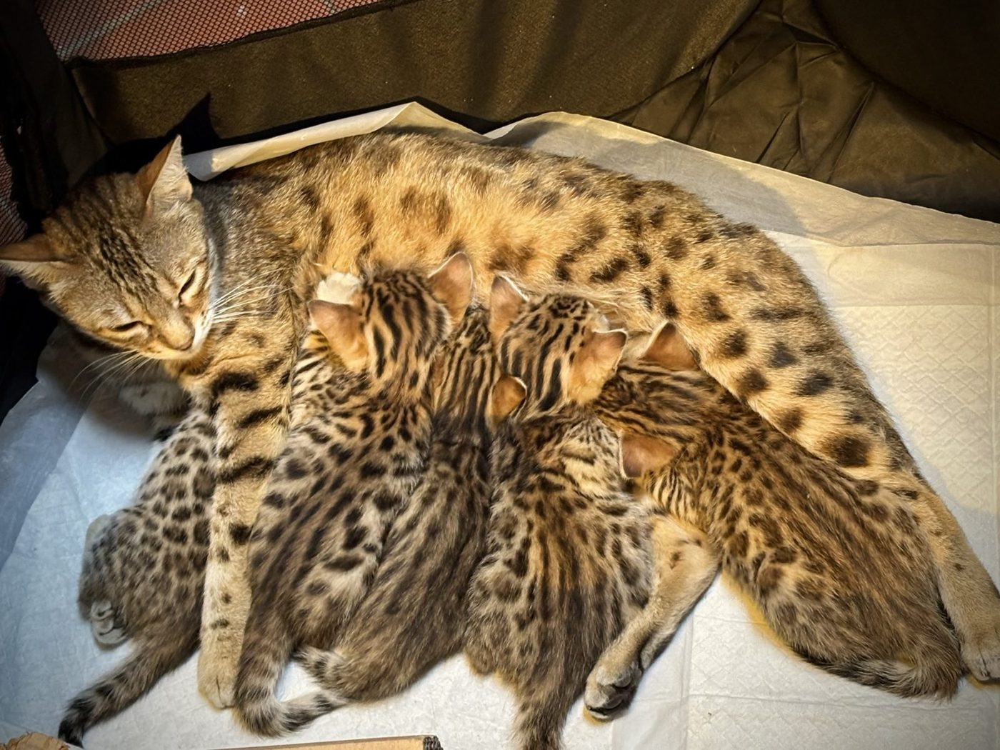
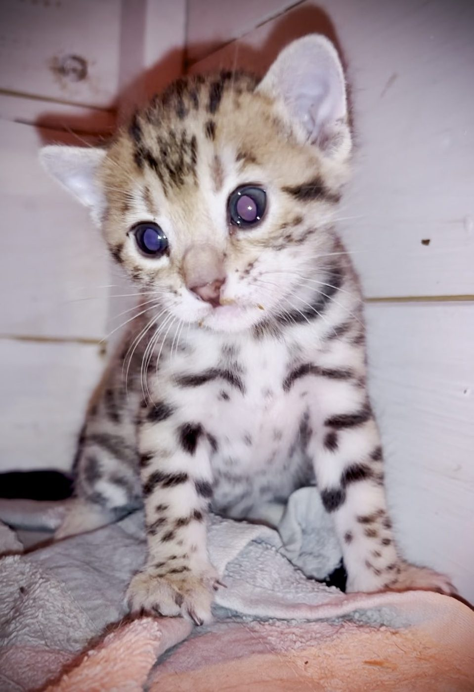
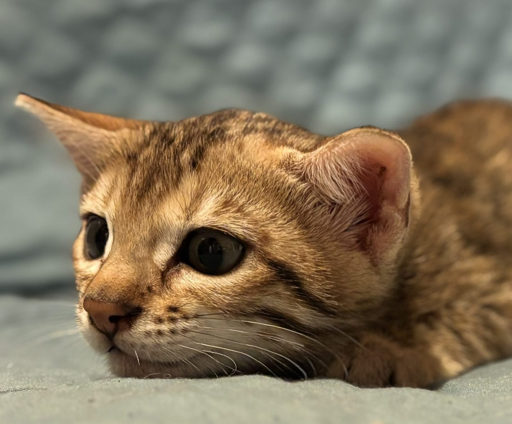
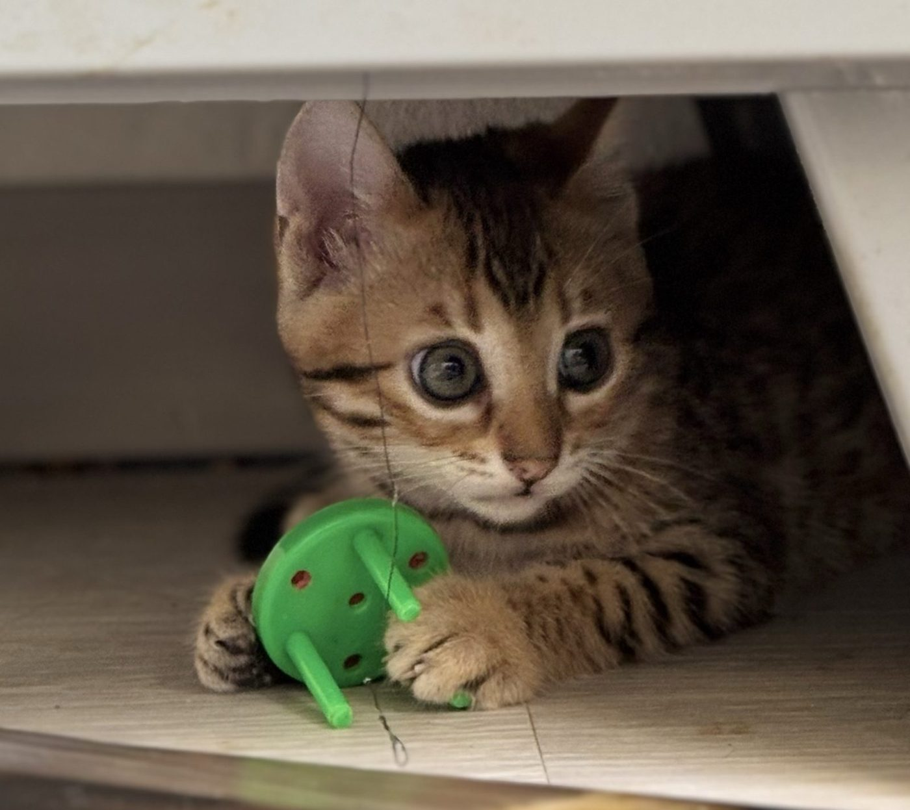
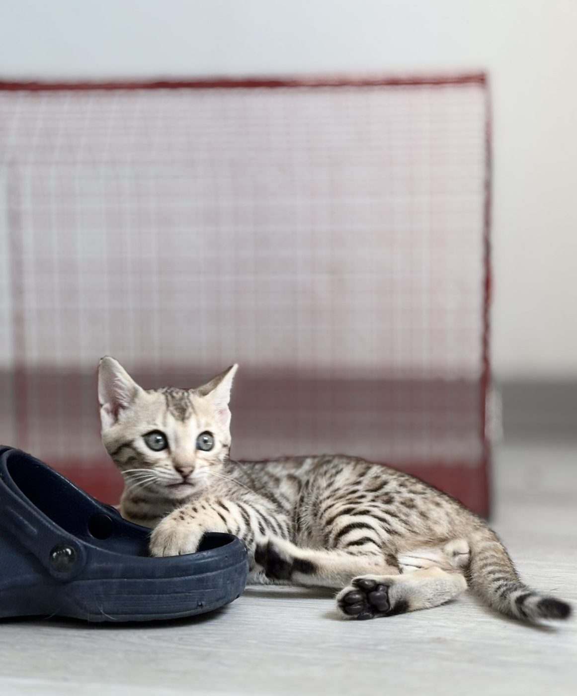
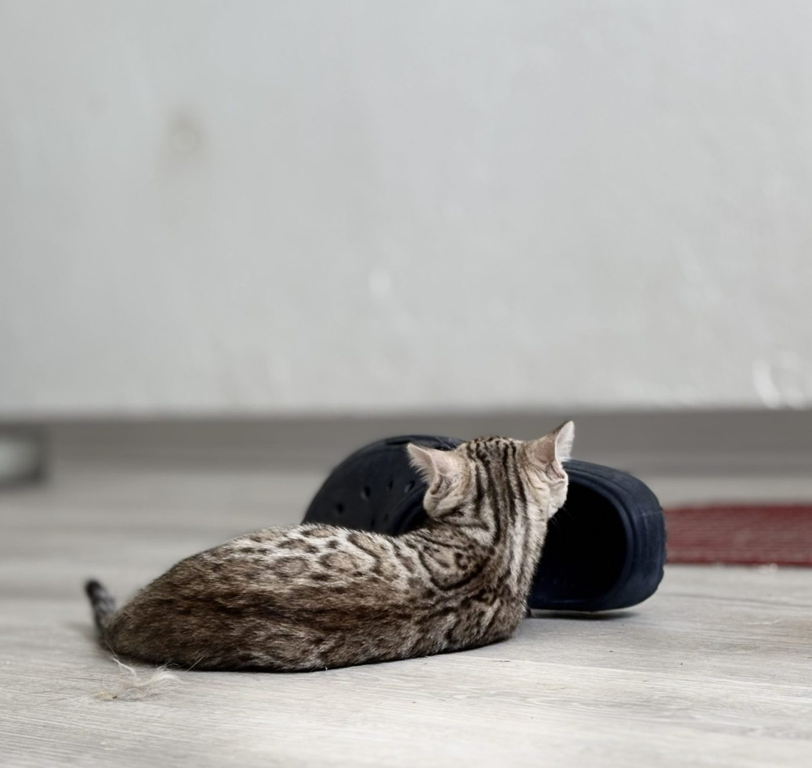
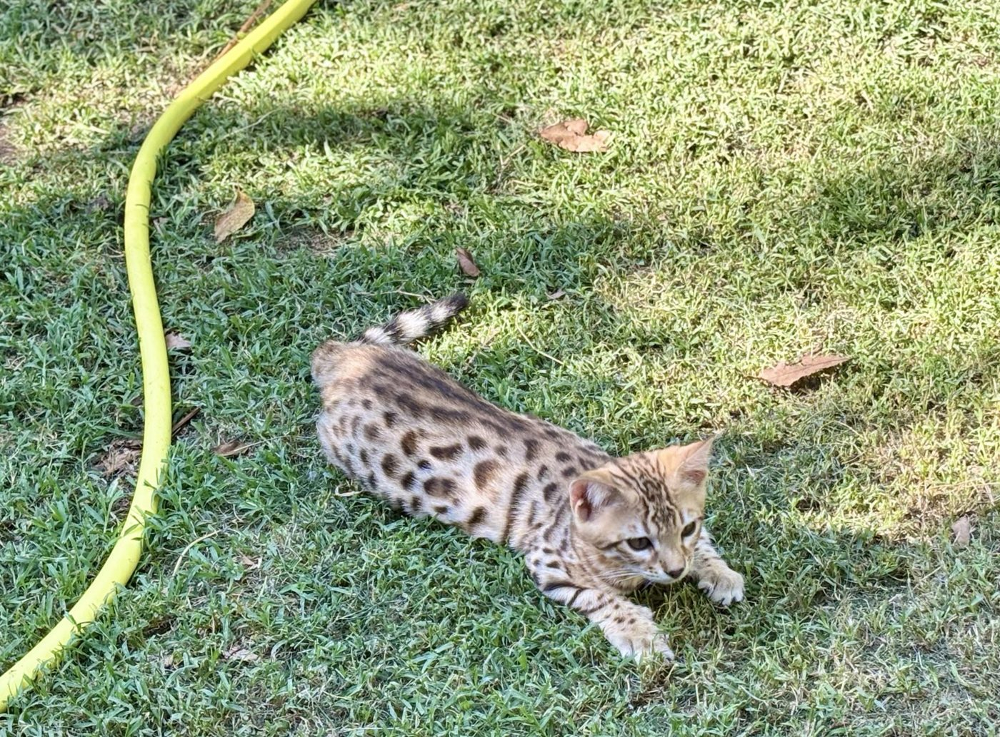
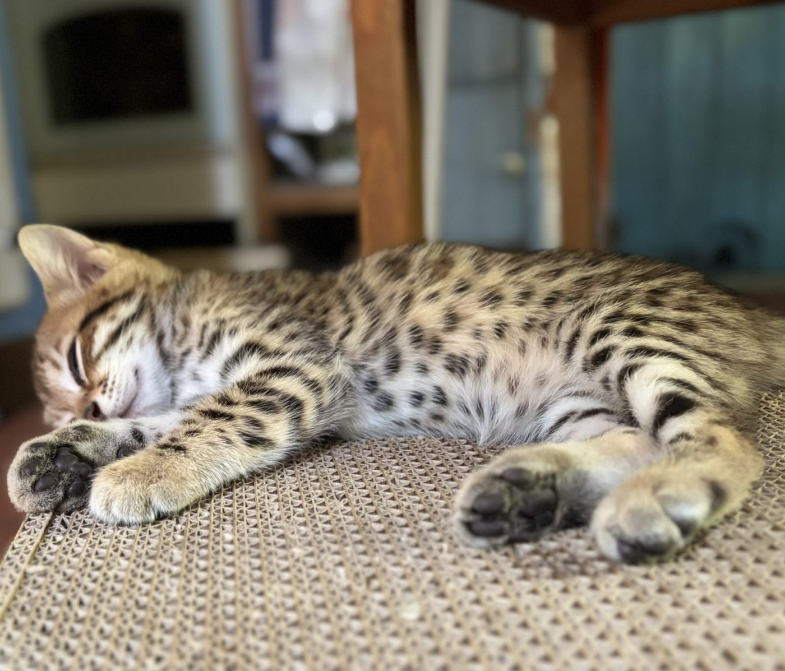

Gattini
Gattini Rajmangal
Ogni gattino cresce in casa, con la mamma, fino al giorno in cui raggiunge la sua nuova famiglia. Qui trovi chi cerca casa adesso e le nostre cucciolate passate.

Cercano casa
Abbiamo gattini pronti a conoscere la loro nuova famiglia
Per foto e video aggiornati, genitori, colori e tempi di adozione, chiamaci o scrivici su WhatsApp: ti mandiamo tutto il materiale.
Cucciolate passate
I gattini che hanno già trovato famiglia
Uno sguardo alle nostre cucciolate passate: ti aiuta a capire che tipo di gatti selezioniamo.








Il tuo gattino
Il tuo gattino Rajmangal arriva con
- Pedigree
- Microchip e libretto sanitario
- Due vaccinazioni, a 9 e a 13 settimane
- Tre trattamenti antiparassitari, a 7, 11 e 15 settimane
- Copia dei test genetici e degli ecocardiogrammi dei genitori
- Gattini da compagnia già sterilizzati, salvo eccezioni
- Su richiesta, un sacchetto delle crocchette che mangia in allevamento e un campione di BARF
Quando arriva nella nuova famiglia
A 15 settimane
Il gattino resta con la mamma fino all'adozione, a 15 settimane, oppure a 16 settimane se va nella nuova casa già sterilizzato.
Così arriva da te completamente svezzato, vaccinato e abituato alla vita di casa.
Come funziona
Dal primo contatto al giorno dell'adozione
Con il modulo, al telefono o su WhatsApp. Ci racconti la tua famiglia e cosa cerchi.
Ti mandiamo foto e video e rispondiamo alle tue domande.
Se vuoi, vieni a trovarci. Siamo una casa privata: la visita si concorda sempre prima.
Scegliamo insieme il gattino giusto per te e fissiamo il giorno in cui arriva a casa, a partire dalle 15 settimane di età.
Domande frequenti
Le domande che ci fanno più spesso
Posso venire a vedere i gattini?
Sì, ma solo su appuntamento. L'allevamento è nella nostra casa, quindi la visita va sempre concordata prima per telefono, WhatsApp o email.
A che età il gattino va nella nuova famiglia?
A 15 settimane, oppure a 16 se va già sterilizzato, dopo vaccinazioni, microchip e trattamenti antiparassitari.
Come funziona l'adozione di un gattino Rajmangal?
Ci piace conoscere la famiglia che accoglierà il gattino. Raccontaci di te, della tua casa e delle tue abitudini: ti daremo tutte le informazioni e sceglieremo insieme il gattino più adatto.
In che orari posso chiamarvi?
Tutti i giorni, indicativamente dalle 10 alle 18. Siamo un allevamento amatoriale: se non rispondiamo, scrivici su WhatsApp e ti richiamiamo appena possibile.
I genitori sono testati?
Sì: test genetici per PK-def e PRA-b, ecocardiogrammi periodici e controlli per parassiti e virus intestinali. Ti diamo copia della documentazione.
Hai trovato il Bengala che cercavi?
Raccontaci di te: ti rispondiamo tutti i giorni, indicativamente dalle 10 alle 18.